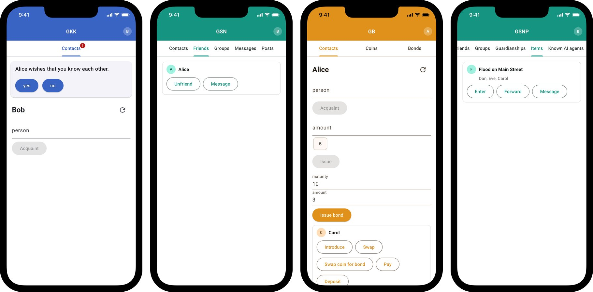
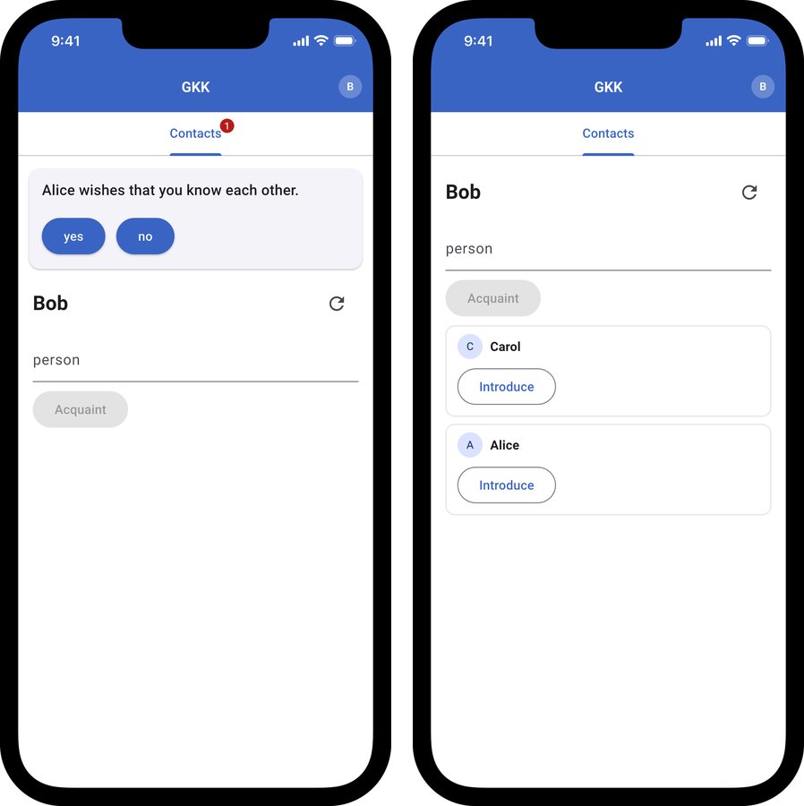
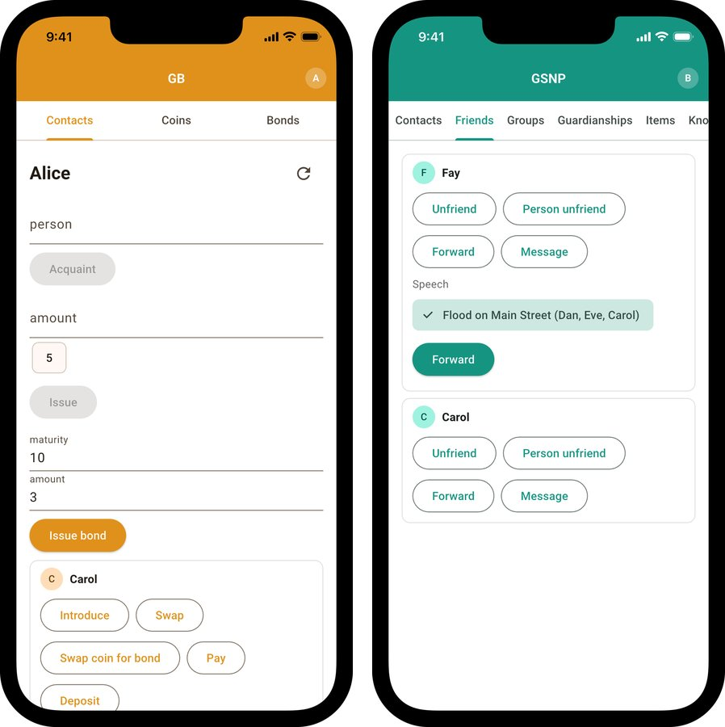

Grassroots
The UI layer: how it works, what others did, what we could do
Nimrod Talmon · Ben-Gurion University · draft, November 24, 2026
Motivation
Every screen is derived from a contract. Today the screens look like admin forms.

Recorded screens of four compiled apps: Knowledge, Groups, Bonds, and Groups with feeds.
Model
vGLP is GLP plus questions to the person, each with an interactive type.
The type fixes which answers are allowed, not who answers.
Model
A tab lists one predicate's atoms. A [button] is an act, offered only where it is possible; a <field> is typed in.
An indented line is a question to another person: a yes/no card. Optional Look line: an icon and a color.

Model
A construct family is a way of drawing questions that keeps their content: it decides layout, rendering and labels.
Where no widget is declared, the default widget is built from the type (right).
The theorems hold for every family with complete widgets, so a person may pick one.
Today: one family (vGLP, Remark 6.4).
| type | default widget |
|---|---|
| a constant | a button |
| a union of constants | a row of buttons |
| a tuple | a form with fields |
| any other union | a menu |
| String · number · Key | a text · number · person field |
| the program's stream | a thread |
| the person's stream | an open input |
Observation
One tab per predicate: six or more tabs
A person is split over three tabs
Every act is a button: five for Carol
Forms show raw names: “person”, “amount”
A conversation is a list in another tab

Related work I
Calvary et al. 2003; W3C MBUI Notes 2014
Tasks → abstract UI → concrete UI → final UI. Our cascade is the same idea, starting from a contract.
Pawson, PhD thesis 2004
UI generated entirely from domain objects. Its generic UI was the main limit; custom views came later.
Plasmeijer et al. 2007; Lijnse, Plasmeijer 2009
Editors generated from types. Their quality is “crucial”; libraries add special editors, e.g. a map for a location.
EclipseSource, open source
A data schema plus an optional UI schema for layout; without one, a default layout.
Survey: “the usability of automatically generated UIs is rather low” (Meixner, Paternò, Vanderdonckt 2011).
Related work II
Tencent; W3C MiniApps white paper
The host fixes the frame (menu, launch page) and offers a design system, WeUI; apps own the pages.
Delta Chat, open spec
Web apps shared in a chat, state sent peer to peer; the chat shows each app’s latest summary line.
Microsoft, open spec
The author owns the content, the host owns the look; a card carries no code.
Google, 2025
Agents send declarative UI built from a catalog of trusted components; the client renders it natively.
In all four, the host cannot read what a small app means: it shows a card or runs code, but cannot merge two apps’ data.
Lessons
Fully automatic UIs look generic; lasting systems add presentation hints
Split content from look: the author says what, the host how. We have this
Super-apps give a strong common frame; the small apps fill it
Proposal 1 · not implemented
Patterns: people, conversation, holdings, items, places, times.
Chosen by a predicate's shape (who, what, when), never by the contract.
A tab may name its pattern:
Messages: those Alice received, as a conversation.
Unnamed: inferred from the shape.
Sketch.
Proposal 2 · not implemented
Contracts all speak of persons, atoms and acts; a host can merge them:
A page per person: Bob's atoms from all contracts, with every act possible with him.
One inbox for every yes/no question.
Sketch; buttons named as in the contracts.
Summary
Our cascade is model-based UI with proofs; the look is left to families
The weak look: one family, and pragmas carry no presentation
Next: issue on patterns; person-first family on four contracts; user try
Open: what belongs in the contract, what in the family, what to the person
Grassroots
The UI layer: how it works, what others did, what we could do
Nimrod Talmon · Ben-Gurion University · draft, November 24, 2026